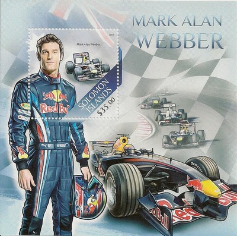
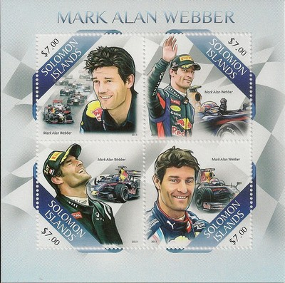
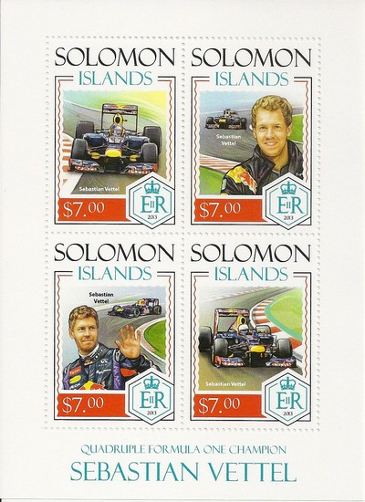
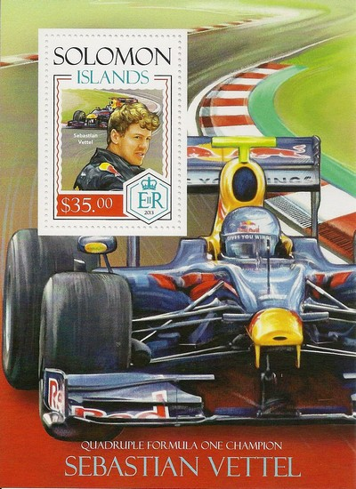
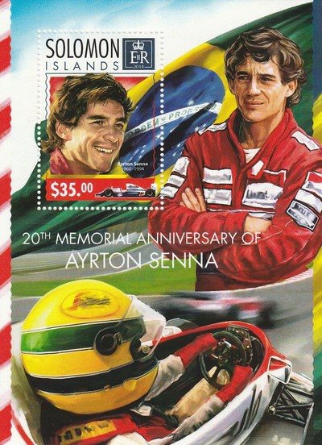
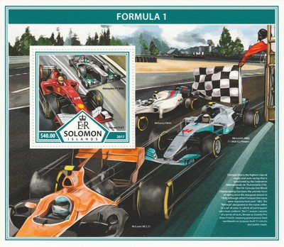
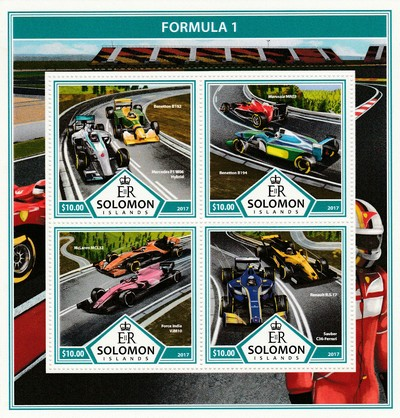

Solomon Islands
|
 Issue date: 2013 A mini sheet featuring Mark Weber. At the end of the 2013 season Mark Weber retired from F1. In his 12 year (2002 to 2013) F1 career he drove for Minardi, Jaguar, Williams and Red Bull. His first win came in 2009 and despite numerous victories thereafter (all with Red Bull) he never came higher than third place in the drivers' championship.  Issue date: 2013 A mini sheet featuring Mark Weber. At the end of the 2013 season Mark Weber retired from F1. In his 12 year (2002 to 2013) F1 career he drove for Minardi, Jaguar, Williams and Red Bull. His first win came in 2009 and despite numerous victories thereafter (all with Red Bull) he never came higher than third place in the drivers' championship.  Issue date: 2013 A mini sheet issued to commemorate Sebastian Vettel becoming the four times World F1 Driver Champion. Vettel won the World F1 Drivers' Championship in 2010, 2011, 2012 and 2013 with Red Bull Racing, making him one of the most successful F1 drivers of all time. He is currently the youngest driver ever to win the World Drivers' Championship and the youngest double, triple and quadruple world champion in F1. On October 4, 2014, Red Bull Racing announced that Vettel would be leaving the team at the end of the season. Team boss Christian Horner confirmed that Vettel announced his intention to trigger an exit clause in his contract to sign a deal with Ferrari for the 2015 season.  Issue date: 2013 A mini sheet issued to commemorate Sebastian Vettel becoming the four times World F1 Driver Champion. Vettel won the World F1 Drivers' Championship in 2010, 2011, 2012 and 2013 with Red Bull Racing, making him one of the most successful F1 drivers of all time. He is currently the youngest driver ever to win the World Drivers' Championship and the youngest double, triple and quadruple world champion in F1. On October 4, 2014, Red Bull Racing announced that Vettel would be leaving the team at the end of the season. Team boss Christian Horner confirmed that Vettel announced his intention to trigger an exit clause in his contract to sign a deal with Ferrari for the 2015 season.  Issue date: 2014 A commemorative stamp for the 20th anniversary of the death of Ayrton Senna.  Issue date: 2014 A commemorative sheet for the 20th anniversary of the death of Ayrton Senna.  Issue date: 21st August 2017 A mini sheet of one value featurning the following F1 cars: - Mercedes F1 W04 - driven in 2013 by 2008 World Champion Lewis Hamilton, who joined the team after Michael Schumacher's retirement, and Nico Rosberg, who remained with the team for a fourth season. - Ferrari F14 T - driven in 2014 by former World Drivers' Champions Fernando Alonso and Kimi Raikkonen, who returned to the team after a five-year absence and thus the first all-European Ferrari driver lineup since 1999. - Williams FW40 - driven in 2017 by Felipe Massa and Lance Stroll, who made his Formula One debut with the team - the number '40' in the chassis name signifies the 40th anniversary of the team. - Mercedes AMG F1 W08 EQ Power+ - driven in 2017 by three-time World Drivers' Champion Lewis Hamilton, who remained with the team for a fifth season, and Valtteri Bottas, who joined the team after 2016 World Champion Nico Rosberg's retirement from the sport. - McLaren MCL32 - driven in 2017 by by two-time World Drivers' Champion Fernando Alonso, who stayed with the team for a third season; and Stoffel Vandoorne, who joined the team after Jenson Button retired from full-time competition at the end of the 2016 season. Originally known as the MP4-32, MCL32 was introduced following CEO Ron Dennis's departure from the team's parent company, the McLaren Technology Group, in November 2016.  Issue date: 21st August 2017 A mini sheet of four values featuring the following cars: - Mercedes F1 W06 Hybrid - the 2015 challenger was driven driven by Lewis Hamilton and Nico Rosberg. - Benetton B192 - the 1992 car driven by Michael Schumacher and Martin Brundle. - Benetton B194 - the 1994 car driven by Michael Schumacher, Jos Verstappen, JJ Lehto and Johnny Herbert. - Marussia MR03 - competed for part of the 2014 F1 season before the team went into administration in November 2014 - driven by Max Chilton and the late Jules Bianchi. - McLaren MCL32 - driven in 2017 by by two-time World Drivers' Champion Fernando Alonso, who stayed with the team for a third season; and Stoffel Vandoorne, who joined the team after Jenson Button retired from full-time competition at the end of the 2016 season. Originally known as the MP4-32, MCL32 was introduced following CEO Ron Dennis's departure from the team's parent company, the McLaren Technology Group, in November 2016. - Force India VJM10 - driven in 2017 by Sergio Perez and Esteban Ocon. - Sauber C36 - driven in 2017 by Marcus Ericsson and Pascal Wehrlein. - Renault R.S.17 - driven in 2017 by Nico Hulkenberg and Jolyon Palmer. |